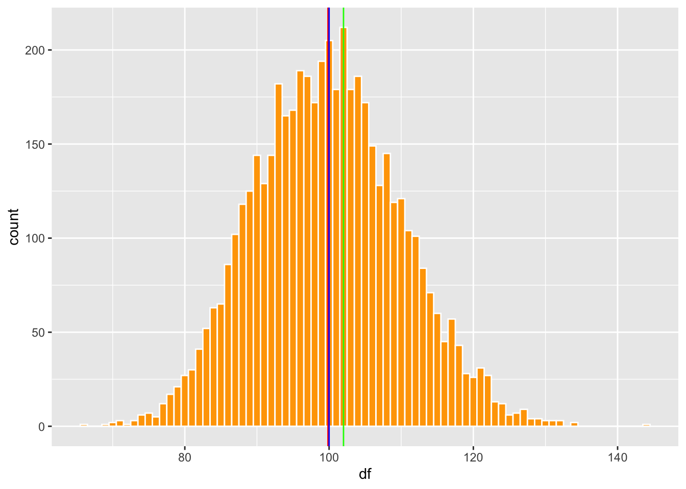
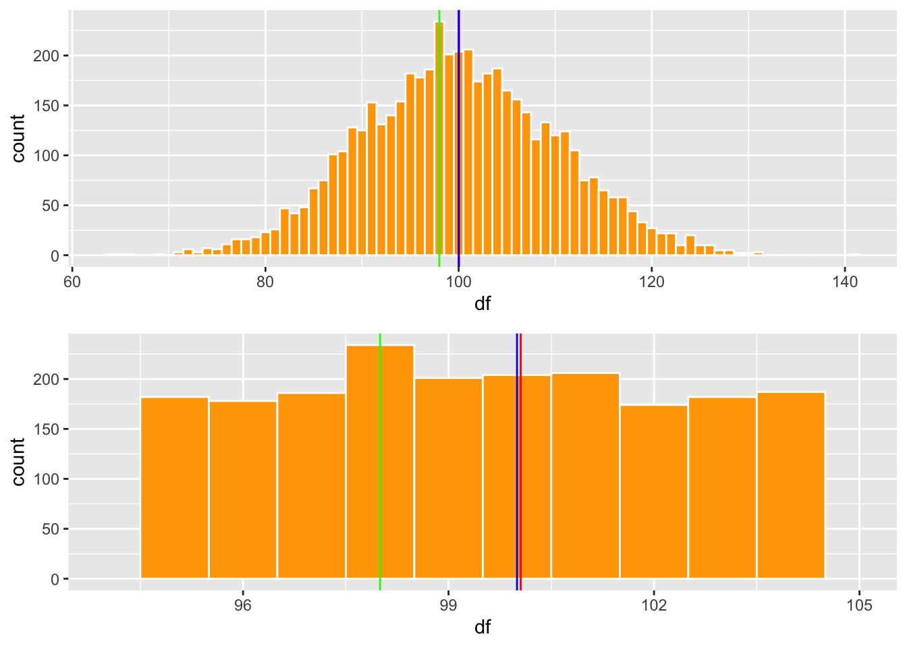

Chapter 5 La dama degustando té
Era una tarde de verano en Cambridge, Inglaterra, a finales de la década de 1920. Un grupo de profesores universitarios, sus esposas y algunos invitados estaban sentados alrededor de una mesa al aire libre para tomar el té de la tarde. Una de las mujeres insistía en que el té era diferente dependiendo de si el té se vertía en la leche o si la leche se vertía en el té. Las mentes científicas entre los hombres se burlaron de esto como una tontería. ¿Cual podría ser la diferencia? No podían concebir ninguna diferencia en la química de las mezclas que pudieran existir. Un hombre delgado y bajo, con anteojos y una barba de Vandyke que empezaba a ponerse gris, se abalanzó sobre el problema. “Probemos esta propuesta”, dijo emocionado. Comenzó a esbozar un experimento en el que a la señora que insistía en que había una diferencia se le presentaría una secuencia de tazas de té, en algunas de las cuales se había vertido la leche en el té y en otras se había vertido el té en la taza de leche. Cuento del libro de “The Lady Tasting Tea: How Statitics Revolutionized Science in the Twentieth Century” por David Salslburg. Traducido por la pagina de Google Translation.
Así comienza el libro de Salsburg (2001), para describir el comportamiento de los científicos cuando están animados de su tema y el deseo de resolver un enigma. Esa persona con barba de Vandyke era Ronald Aylmer Fisher (1890 -1962) es reconocido como responsable de la estadística moderna y una de las personas más importante en el área en el siglo 20. Su contribuciones han tenido un impacto en muchas áreas incluyendo la genética mendeliana y la selección natural.
5.1 Definición de lo que es la estadística
La estadística es un área de la ciencia de datos que utiliza valores numéricos para evaluar patrones y inferir situaciones futuras. Esta definición es sencilla, pero incluye muchos temas pero lo más importante es el componente de utilizar datos, resumiendo estos en indices o parámetros y utilizar estos para predecir/inferir el futuro. La palabra estadística usado en el termino más o menos similar a su definición de hoy probablemente origina del alemán Statistik por Gottfried Achenwall (1749). Donde el termino era para la descripción de datos del estado. Es solamente en 1791 por Sir John Sinclair que el termino comenzó a ser utilizado para la descripción de conjuntos de datos en general sin ser limitado a datos de un estado/pais.
5.2 Introducción a la Historía de la Estadística.
Al principio en el siglo 18 el termino estadística era designar la colección información sobre la población y la economía de diferentes regiones o países. En este periodo el objetivo era tabular la información, por ejemplo cuanta gente en un área, cuantas vacas hay, cuanta gente son parte de la nobleza.
Por ejemplo uno de las primeras encuesta para determinar la estadística de una población fue hecha por John Gaunt (1662) titulado Natural and Political Observations Made upon the Bills of Mortality y puede encontrar el libro original aquí http://www.neonatology.org/pdf/graunt.pdf. En el libro expone que 1/3 parte de los niños antes de la edad de 16 mueren en Londres, Inglaterra.
Aquí un extracto de una de estas tablas de las causas de enfermedades y mortandad en Londres en el año 1632. Note que antes de este trabajo esto datos era bien raro y inexistente en la mayoría de las ciudades o países.
Note algunos causas principales de mortandad, “Aged” (628), que la persona es de edad mayor, y “Abortive and Stillborn” que natimuerto (445). Algunos se considerara raros hoy en día es morir de “grief” o sea de tristeza (11).

Figure 5.1: Gaunt Disease Tables
El otro componente importante de la estadística fue el desarrollo de las probabilidades en el siglo 17 y 18. La gente le gustaba (como hoy en día) hacer apuestos y jugar cartas para dinero. Entonces mucha gente trataba de entender las diferentes probabilidades de ganar en estos juegos de azar para poder aumentar su probabilidad de ganar en estos juegos.
5.3 Gertrude Mary Cox
Trabajo presentado por Abimelys Anaya (estudiante de la Universidad de Puerto Rico en Humacao)
Gertrude Mary Cox fue una destacada e importante estadística estadounidense. Nació el 13 de enero de 1900 en una granja cerca a Dayton, Iowa; y falleció a los 78 años, el 17 de octubre de 1978 en Durham, Carolina del Norte, a causa de leucemia. Compartiendo su hogar con 3 hermanos, se dice que su familia era muy unida, pero Cox era específicamente más cercana a su madre, Hemma, de quién heredó su pasión por ayudar a los demás.
Cursó sus primeros estudios en la llamada Perry High School de la misma ciudad. Su amor por los deportes competitivos, hizo que formara parte del equipo de baloncesto en dicha escuela. No fue hasta 1925, luego de haber trabajado un tiempo como diaconisa de la Iglesia Metodista, que sintió interés en continuar estudios graduados en Iowa State College en Ames con concentración en matemáticas, debido a que su cargo en la iglesia requería un grado universitario. Logrando así en 1931, alcanzar una maestría en estadística. Desde ese mismo año hasta el 1933, terminó estudios de posgrado en estadística psicológica en la Universidad de California. Posteriormente, regresa a Iowa, donde participó en la inauguración del Laboratorio de Estadística y comienza su investigación en base al diseño experimental. Fue dicha carrera y el empeño depositado en la misma, quien le permitió dejar una gran aportación en procesos que utilizamos y que conocemos hoy día de esta rama de la ciencia.
5.3.1 Primera dama en Estadística
En 1939, la nombraron profesora asistente en Iowa State College y, en 1940, dirigió el primer departamento de Estadística Experimental en la Escuela de Agricultura de la Universidad de Carolina del Norte. Esto la convirtió en la primera mujer directora del recinto. Además, Cox fue la primera mujer jefa del Instituto de Estadística de la Universidad de Carolina del Norte en 1944. Un año más tarde, participó como editora principal de la revista Biometrics durante 10 años, y fundó, en 1947, la ¨International Biometric Society¨. Además, se convirtió en presidenta de la ASA (American Society of Anesthesiologists) en 1956.

5.3.2 Revista Biometrics

La revista7 fue publicada por la Sociedad Internacional de Biometría en 1945, originalmente bajo el título de Biometrics Bulletin. Sin embargo, en 1947, su nombre fue acortado. Su objetivo principal consiste en publicar artículos sobre la aplicación de la estadística y las matemáticas a las ciencias biológicas. Según una encuesta realizada por especialistas en biometría, obtuvo el quinto lugar entre 40 revistas existentes de estadítica.
5.3.3 Libro: Diseños Experimentales
¿Qué es el diseño experimental? Este consiste en la identificación y cuantificación de las causas de un efecto provocado sobre otra variable de interés durante un estudio experimental.
En 1950, Gertrude M. Cox junto a William Cochran, publicó Experimental Design, libro utilizado por años, y que actualmente permanece accesible, como primera referencia para el diseño experimental. En este, podemos encontrar la expansión de sus notas mimeografiadas de las clases de diseño que brindaba a sus estudiantes. El libro enfatiza tres principios: (1) los estadísticos deben participar en la investigación desde las etapas de planificación, es decir, primeros pasos, el establecimiento de los objetivos del experimento y la planificación del análisis; (2) aleatorizar todo lo que se pueda aleatorizar; y (3) utilizar el bloqueo, siempre que sea posible, para reducir los efectos de variabilidad, donde los bloques son grupos homogéneos de unidades experimentales.
Según menciona Sharon L. Lohr en un artículo para ¨Notices of the American Mathematical Society¨4, en él ¨podemos encontrar planos detallados para el cuadrado latino, factorial, factorial fraccional, parcela dividida, celosía, bloque incompleto balanceado y otros diseños. Cada descripción de diseño comenzaba con ejemplos, seguida de una discusión sobre cuándo el diseño era adecuado e instrucciones detalladas de cómo realizar la aleatorización. Luego, vino uno o más estudios de casos detallados, que muestran por qué ese diseño había sido elegido para cada experimento y cómo había sido aleatorizado, tomando al lector paso a paso a través de los cálculos necesarios para construir el análisis de varianza y estimar los errores estándar para diferencias de medias de tratamiento. Los autores también discutieron cómo estimar la eficiencia del diseño en relación con un diseño completamente aleatorio y cómo hacer los cálculos para la estructura desequilibrada que resultó cuando uno o más ejecuciones experimentales tenían datos faltantes¨.
5.3.4 Últimas aportaciones
Gertrude M. Cox se retiró en 1960 del Instituto de Estadística, para dirigir la División de Investigación Estadística del RTI (Research Triangle Institute), donde fue asesora desde el 1965. Finalmente, se dedicó a distribuir sus conocimientos en estadística al exterior. Realizó 23 viajes internacionales, entre los cuales se encontraban los países de Egipto y Tailandia.
Otros reconocimientos
1944 - Socia de la Asociación Americana de Estadísticas y del Instituto de Estadísticas Matemáticas.
1949 - Primera mujer electa en el Instituto Internacional de Estadística.
1957 - Socia de honor de ¨Royal Statistical Society¨.
1959 - Recibe premio O. Max Gardner por parte de la Universidad de Carolina del Norte por su “contribución al bienestar de la raza humana”.
1975 - Electa en la Academia Nacional de Ciencias.
1977 - La universidad de Carolina del Norte, creó una beca de investigación de $200,000 en su honor.
Defendió el uso de computadoras electrónicas para el trabajo estadístico.
Sin lugar a dudas, fue pionera de lo que actualmente nos permite, de manera fácil, realizar investigaciones cuantitativas y que son, y han sido desde entonces, de suma importancia para nuestro entendimiento en las ciencias biológicas.
5.3.5 Referencias
1 Anderson, R.L. (1900-1978). Gertrude Mary Cox. Recuperado el 13 de septiembre de 2020, de http://www.nasonline.org/publications/biographical-memoirs/memoir-pdfs/cox-gertrude.pdf
2 Biometrics (journal). (2020). Recuperado el 13 de septiembre de 2020, de https://en.wikipedia.org/wiki/Biometrics_(journal)
3 Gertrude Cox. (2020). Recuperado el 13 de septiembre de 2020, de https://es.wikipedia.org/wiki/Gertrude_Cox
4 Lohr, S.L. (2019). Gertrude M. Cox and Statistical Design. Recuperado el 13 de septiembre de 2020, de https://www.ams.org/journals/notices/201903/rnoti-p317.pdf
5 Mujeres con ciencia. (2014). Gertrude Cox, la primera dama de la Estadística. Recuperado el 13 de septiembre de 2020, de https://mujeresconciencia.com/2014/06/09/gertrude-cox-la-primera-dama-de-la-estadistica/
6 Universidad de Colima. (2020). Diseño experimental. Recuperado el 13 de septiembre de 2020, de https://recursos.ucol.mx/tesis/diseno_experimental.php
7 Welsh, A., Ghosh, D., Brewer, M. y Molenberghs, G. (1999-2020). Biometrics, Journal of the International Biometric Society. Recuperado el 13 de septiembre de 2020, de https://onlinelibrary.wiley.com/journal/15410420
5.4 Algunos personas importantes
- Trabajo grupo de 2: 10 puntos. PARTE de las destrezas que estará aprendiendo en adición de conocer un estadístico es como preparar un documento en .Rmd para hacer una documento. Se someterá tanto el documento en .html y .Rmd en MSTeam.
Se seleccionará uno de las personas abajo y se hará una pequeña biografía sobre esta persona (3 paginas). Debe incluir diferentes componentes. - Información personal de la persona
- Su carrera de estudio
- Su aportación a la estadística
- Cual método estadístico desarrolló (seleccioné uno para explicar, aunque puede mencionar múltiples).
- Por qué este método fue innovador
- Cuantos papers a publicado (busca en Google scholar)
- Pon una formulas matemáticas con explicaciones de una de las aportaciones en estadística.
- fotos/pintura de la persona
- literatura citada
- El trabajo debería ser montado en .Rmd
5.5 Lista de estadísticos
- Florence Nightingale
- Gertrude Mary Cox
- Enid Charles
- Grace Wahba
- Ronald Fisher
- Reverand Thomas Bayes
- John Tukey
- Karl Pearson
- Carl Gauss
- Bradley Efron
- Andrey Nikolayevich Kolmogorov
- Pierre-Simon Laplace
- George Box
- Francis Galton
- Andrey Markov
- Samuel S. Wilks
5.6 Formula
Vea este enlace.
https://rpruim.github.io/s341/S19/from-class/MathinRmd.html
Localizado en el centro y una linea parte \[\sum_{n=1}^{10} n^2\]
Localizado en la misma linea \(\sum_{n=1}^{10} n^2\)
Fecha de la ultima revisión
## [1] "2023-07-31"

library(ggplot2)
library(Hmisc)
library(gridExtra) # Un paquete para organizar las figuras de ggplot2
library(statip)5.7 Medida de tendencia central
La medidas de tendencia central se llaman así, porque el valor indica la distribución de los datos y los indices tiende a estar en el centro de la distribución. Hay por lo menos 16 tipos de medidas de tendencias centrales https://en.wikipedia.org/wiki/Central_tendency. En este curso estaremos solamente mencionado 3 de estas medidas.
- El promedio a arithmetico
- La mediana
- La moda
5.8 Calculando el promedio
Aquí creamos una lista de datos con la función c( ) y con la función mean podemos calcular el promedio. El promedio es la suma de los valores divido por la cantidad de valores en la lista.
\[\bar{x}=\frac{\sum_{i=1}^{n}x_i}n\]
## [1] 55.9 Cuando el promedio no esta localizado en el centro
Digamos que yo tengo la cantidad de semillas producida por 11 plantas, la primera no produjo semillas, la segunda 2 semillas y subsiguientemente hasta la ultima que tuvo una producción de 1000 semillas. Nota que en este caso el promedio no se encuentra el el centro de los datos, por consecuencia NO es un buen indicador de la tendencia central de los datos. Cuando esto ocurre uno no debería usar el promedio para describir la tendencia central de los datos.
## [1] 95## [1] 955.11 Con n impares
Cuando el promedio no es indice adecuado de la tendencia central tenemos dos alternativas, la mediana y la moda. La mediana es el valor en el centro después de haber organizado los datos del más pequeño al más grande.
\[Mediana\ =\frac{\left({x}_{n+1}\right)^{th}}{2}\] Donde n es la cantidad de valores en orden del más pequeño al grande. Por consecuencia se selecciona el valor en el centro de todos los valores. Lo que la función de mediana hace es poner los valores en orden y después determina cual es el valor en el centro. Aquí para demostrar los que hace la función 1) creo un una lista de valores, 2) pongo los datos en orden 3) y mirando los valores en orden vemos que el valor 6 es el valor en el centro. Pero este paso no es necesario ya que la función median lo hace automaticamente.
## [1] 13## [1] 65.12 Con n pares
Cuando hay una cantidad de datos pares, los dos valores en el centro son sumado y el promedio es calculado.
\[Mediana\ =\frac{1}{2}* (\frac{\left({x}_{n+1}\right)^{th}}{2}+\frac{\left({x}_{n+1}\right)^{th}}{2})\] En el siguiente caso tanto el valor de 6 y 7 se encuentra en el centro, por consecuencia la mediana es el promedio de estos valores.
## [1] 0 1 2 3 4 5 6 7 7 23 24 26
## [13] 247 43626## [1] 6.55.13 La moda
La moda es el valor más común. Parta encontrar la moda, hay que instalar dos programas. Primero instalar devtools y despues correr el siguiente chunk para instaslar el package modeest, para mode estimates. Quitar # para correr la función.
Activar el packete
Ya pueden ahora usar la mfv para encontrar la moda de conjunto de datos. Lo que vemos es que el valor de 7 es el más comun en la lista de datos.
## [1] 75.14 Cuando es que el promedio, mediana y moda son iguales?
Los tres valores de tendencia central son iguales cuando la distribución es normal, conocida también como en forma de campana. Aquí preparo un lista de datos con distribución normal, y evaluamos donde están los tres valores de tendencia central. Se usa la función rpois, para crear un conjunto de datos al azar con 100000, datos, un promedio de 100.
## df
## 1 109
## 2 135Lo que uno observa es que los tres valores son muy cercano uno del otro.
Podemos visualizar estos datos usamos dos gráfico, En el gráfico de la izquierda se ve una distribución normal con las tres lineas (promedio, mediana y moda). En el gráfico de la derecha se observa la misma información pero solamente los valores entre 96 y 101. Se observa que la mediana y el promedio son igual y la moda varia un poco, se encuentra donde la barra es más alta. Se observa que los tres valores son cerca del centro.
a=ggplot(df1, aes(df))+
geom_histogram(fill="orange", colour="white", binwidth = 1)+
geom_vline(aes(xintercept = pro), colour="red")+
geom_vline(aes(xintercept = med), colour="blue")+
geom_vline(aes(xintercept = mod), colour="green")+
theme(legend.position = "none")
a
b=ggplot(df1, aes(df))+
geom_histogram(fill="orange", colour="white", binwidth = 1)+
geom_vline(aes(xintercept = pro), colour="red")+
geom_vline(aes(xintercept = med), colour="blue")+
geom_vline(aes(xintercept = mod), colour="green")+
xlim(94,105)+
theme(legend.position = "none")
5.15 Distribución cuando los tres valores de tendencia centrtal no son iguales.
En estas distribuciones uno observa que hay exceso de vaslores pequeños o grande. Esto resulta en que los tres indices de tendencias centrales no se encuentra cerca uno del otro.
library(tidyverse)
dfb1=round(rbeta(10000, 3,1, ncp = 0),3)
dfb1=tibble(dfb1)
#head(dfb)
df2= round(rbeta(10000, 1,3, ncp = 0),3)
df2=tibble(df2)
#head(df2)- ¿Cual es la linea de promedio, moda y mediana en cada gráfico?
mea=mean(dfb1$dfb1)
med=median(dfb1$dfb1)
mod=statip::mfv1(dfb1$dfb1)
meab=mean(df2$df2)
medb=median(df2$df2)
modb=statip::mfv1(df2$df2)
SesgadoDerecho=ggplot(dfb1, aes(dfb1))+
geom_histogram(fill="orange", colour="white")+
geom_vline(aes(xintercept = mea), colour="red")+
geom_vline(aes(xintercept = med), colour="blue")+
geom_vline(aes(xintercept = mod), colour="green")+
theme(legend.position = "none")
SesgadoIzquierda=ggplot(df2, aes(df2))+
geom_histogram(fill="orange", colour="white")+
geom_vline(aes(xintercept = meab), colour="red")+
geom_vline(aes(xintercept = medb), colour="blue")+
geom_vline(aes(xintercept = modb), colour="green")+
theme(legend.position = "none")
SesgadoDerecho

library(ggpubr)
#ggarrange(c,d, nrow=2, ncol=1)
library(grid)
#grid.arrange(rectGrob(), rectGrob())
#marrangeGrob(c,d, nrow=2)5.16 Variables binomial
En el siguiente ejemplo podemos ver claramente que las medidas de tendencias central no son adecuada.
Primero producimos un conjunto de datos que tiene solamente dos alternativas 0 y 1. Para facilitar los datos e imaginar lo que quiere decir estos datos que cuando es un 0 la persona no tiene hijos y cuando es un 1 tiene hijos.
## dfBin
## 1 1
## 2 0
## 3 1
## 4 0
## 5 0
## 6 0Ahora vamos a producir el gráfico. Lo que uno observa es que el promedio esta en el centro cerca de .6, pero no hay ningún dato cerca del promedio. El promedio no representa la “tendencia central” de la distribución.
## [1] 0.6011ggplot(dfBin, aes(dfBin))+
geom_histogram(fill="orange", colour="white")+
geom_vline(aes(xintercept = mea), colour="red")+
geom_vline(aes(xintercept = med), colour="blue")+
geom_vline(aes(xintercept = mod), colour="green")+
theme(legend.position = "none")